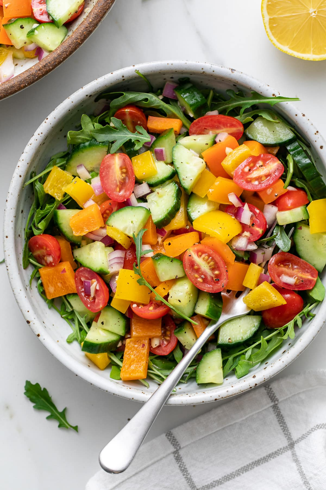

gi
Jane Bennet Salad

The most beautiful salad with the greatest of patience
Lettuce
tomatoes
cucumber
ranch dressing
chop up lettuce in a bowl
add cucumber and tomatoes
toss with ranch dressing and serve